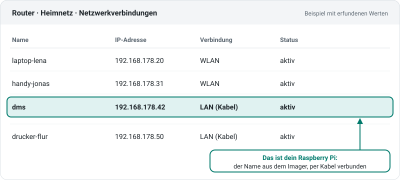
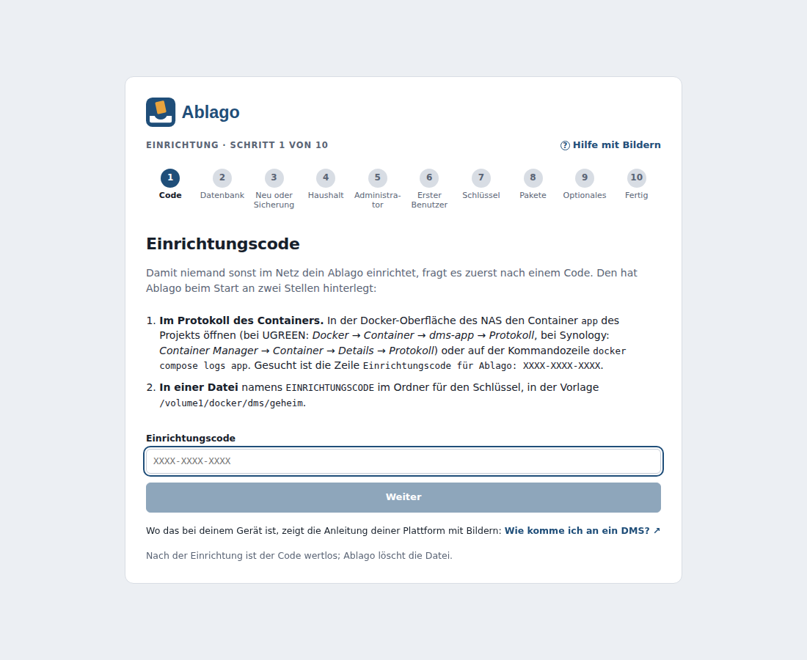
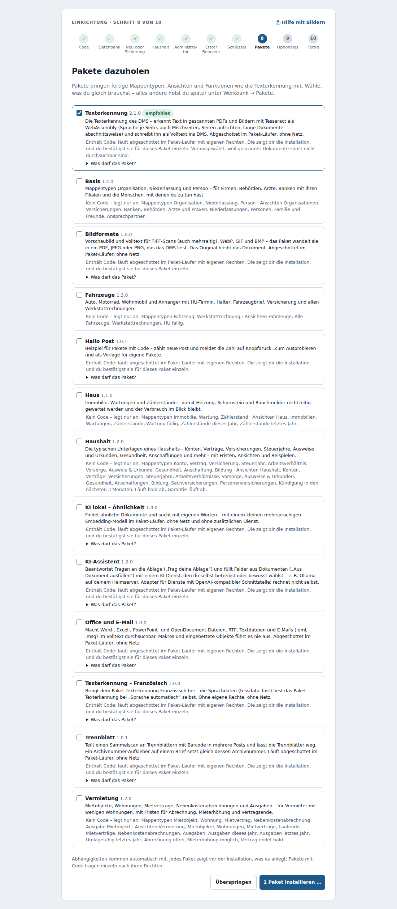
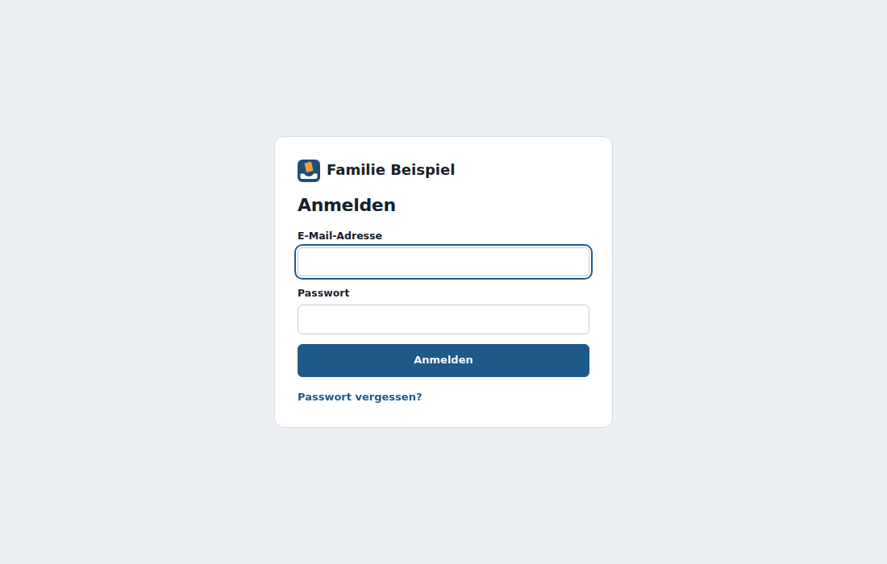
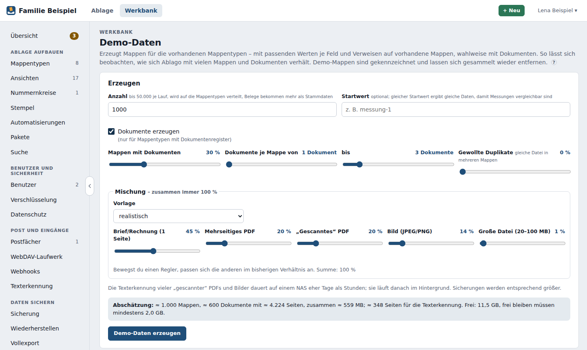

Raspberry Pi – Schritt für Schritt¶
Geprüft: Vorlage und arm64-Image automatisch, Gerät noch nicht
Das Image für arm64 prüfen die Rechner von GitHub bei jeder Änderung auf einem echten ARM-Rechner, die Vorlage startet dort probehalber (amd64). Von einem Raspberry Pi gibt es noch keine Meldung; für das Projekt suchen wir einen Raspberry Pi 5 (#589). Was das heißt, steht unter Geprüfte Plattformen.
Mit dieser Anleitung bringst du das DMS auf einem Raspberry Pi 4 oder 5 zum Laufen – vom Auspacken bis zur ersten Anmeldung. Du brauchst dafür keine IT-Kenntnisse. Ein paar Befehle tippst du ab oder kopierst sie, jeder ist erklärt. Rechne mit etwa einer Stunde, das meiste davon ist Warten.
So ist jeder Schritt aufgebaut: was du tust · was du danach siehst · was hilft, wenn es nicht klappt · wo die offizielle Anleitung steht. Sieht bei dir etwas anders aus als hier – Programme bekommen neue Versionen –, findest du dort den aktuellen Stand.
- Einkaufsliste
- System aufspielen
- Pi anschließen und finden
- Mit dem Pi verbinden
- DMS installieren – ein Befehl
- Im Browser einrichten
- Gut zu wissen
Danach kannst du freiwillig messen, wie schnell dein Pi ist, und dem Projekt damit helfen.
Für Fortgeschrittene: die Kurzfassung
Raspberry Pi OS Lite (64-bit) mit SSH auf eine SSD schreiben, Docker nach der offiziellen Anleitung für Debian installieren, dann:
curl -fsSLO https://raw.githubusercontent.com/motom001/dms/main/deploy/raspberry-pi/einrichten.sh
bash einrichten.sh # oder: bash einrichten.sh /mnt/ssd/dms
Das Skript prüft 64 Bit, Arbeitsspeicher, Platz und Docker, legt ~/dms mit der Vorlage deploy/raspberry-pi/docker-compose.yml (zwei Container) und einer .env mit zufälligem Datenbank-Passwort an und startet. Ohne Skript geht es wie unter PC mit Linux.
1. Einkaufsliste¶
| Was | Empfehlung | Warum |
|---|---|---|
| Raspberry Pi | Pi 5 oder Pi 4 mit 4 GB oder 8 GB Arbeitsspeicher | Mit 2 GB läuft das DMS auch, aber knapp. Mit 4 GB oder mehr bleibt Luft für Texterkennung und Sicherungen. |
| Netzteil | das offizielle Netzteil für dein Modell (Pi 5: 27 W, Pi 4: 15 W, beide mit USB-C) | Ein schwaches Handy-Ladegerät führt zu seltsamen Fehlern und Abstürzen, und die SSD bekommt zu wenig Strom. |
| Gehäuse mit Kühler | beim Pi 5 mit Lüfter (z. B. der offizielle „Active Cooler“), beim Pi 4 mindestens Kühlkörper | Wird der Pi zu heiß, bremst er sich selbst aus. |
| SSD | eine SSD mit USB-3-Anschluss (128 GB bis 1 TB); beim Pi 5 alternativ eine NVMe-SSD auf einem Aufsatz | Siehe unten: SSD statt SD-Karte. |
| Netzwerkkabel | ein normales LAN-Kabel zum Router | Stabiler und schneller als WLAN; der Pi ist dann im Router leicht zu finden. |
| PC oder Mac | den hast du schon | Damit schreibst du das System auf die SSD und richtest später alles im Browser ein. |
Warum eine SSD statt einer SD-Karte?
Das DMS hat eine Datenbank. Sie schreibt ständig viele kleine Änderungen. SD-Karten verschleißen dabei und gehen oft ohne Vorwarnung kaputt – mit allen Dokumenten darauf. Eine SSD ist für so etwas gebaut, hält viele Jahre und ist um ein Vielfaches schneller: Suche, Vorschaubilder, Texterkennung und Sicherungen gehen spürbar flotter. Am einfachsten ist eine SSD mit USB-Anschluss: Du schreibst das System direkt darauf und brauchst dann gar keine SD-Karte.
Was nicht geht: Raspberry Pi 3, Pi 2, Pi 1 und Pi Zero haben zu wenig Arbeitsspeicher. Ein 32-Bit-System geht auch auf einem Pi 4 oder 5 nicht – das DMS gibt es nur für 64 Bit.
Offizielle Anleitung: Raspberry Pi – Hardware, Netzteile und Kühlung
2. System aufspielen¶
Das „System“ ist Raspberry Pi OS – so etwas wie Windows, nur für den Pi. Du schreibst es mit dem Programm Raspberry Pi Imager auf die SSD.
Bildschirmfotos gesucht
Wo unten „Bildschirmfoto folgt“ steht, fehlt noch ein Bild. Wenn du den Imager gerade vor dir hast und helfen möchtest: In Issue #591 steht, welche Bilder fehlen und worauf du achten musst (keine echten Daten, kein echtes WLAN oder Passwort).
- Imager installieren: Lade den Raspberry Pi Imager für dein System (Windows, macOS oder Linux) und installiere ihn wie jedes andere Programm.
- SSD anschließen: Steck die SSD per USB an deinen PC oder Mac.
-
Imager starten und Gerät wählen: dein Modell, also Raspberry Pi 5 oder Raspberry Pi 4.
Bildschirmfoto folgt – Imager: Startseite
Zu sehen: die Startseite des Imagers mit den drei Knöpfen Gerät wählen, OS wählen und SD-Karte wählen (bzw. Speicher wählen). Markiert: Gerät wählen, darunter die Liste mit Raspberry Pi 5 und Raspberry Pi 4.
-
OS wählen: Raspberry Pi OS (other) → Raspberry Pi OS Lite (64-bit). „Lite“ heißt: ohne Bildschirmoberfläche. Die braucht ein Server nicht, und so bleibt mehr Arbeitsspeicher für das DMS.
Bildschirmfoto folgt – Imager: Betriebssystem wählen
Zu sehen: die Liste der Betriebssysteme, aufgeklappt Raspberry Pi OS (other). Markiert: der Eintrag Raspberry Pi OS Lite (64-bit) – nicht der ohne „(64-bit)“.
-
Speicher wählen: deine SSD. Achte auf Name und Größe – alles auf diesem Laufwerk wird gelöscht. Steckt noch ein USB-Stick oder eine Speicherkarte am PC, zieh sie vorher ab, dann kannst du nichts verwechseln.
Bildschirmfoto folgt – Imager: Speicher wählen
Zu sehen: die Liste der Laufwerke mit Name und Größe. Markiert: die SSD (z. B. „USB SSD – 256 GB“).
-
Einstellungen anpassen: Auf Weiter fragt der Imager, ob du die Einstellungen anpassen möchtest → Einstellungen bearbeiten. Je nach Version des Imagers kommen die Fragen auf einer Seite mit Reitern oder als einzelne Seiten nacheinander – gefragt wird dasselbe:
Einstellung Was du einträgst Warum Hostname (Name des Pi) dmsUnter diesem Namen findest du den Pi später: dms.localBenutzername und Passwort einen Namen, z. B. lena, und ein gutes Passwort – schreib beides aufDamit meldest du dich in Schritt 4 am Pi an WLAN leer lassen Du nimmst das Netzwerkkabel Zeitzone und Tastatur Europe/BerlinunddeRichtige Uhrzeit für Fristen und Sicherungen SSH (Reiter Dienste bzw. Fernzugriff) SSH aktivieren, Passwort zur Authentifizierung verwenden Ohne SSH kannst du dich nicht vom PC aus mit dem Pi verbinden Bildschirmfoto folgt – Imager: Einstellungen
Zu sehen: der Dialog Einstellungen anpassen, Reiter Allgemein mit Hostname
dms, Benutzernamelena, Passwort (Punkte), WLAN leer, ZeitzoneEurope/Berlin, Tastaturde; daneben der Reiter Dienste mit dem Haken bei SSH aktivieren. Markiert: Hostname, Benutzername und der Haken bei SSH. -
Schreiben: Speichern → Ja (Einstellungen anwenden) → Ja (Laufwerk löschen). Je nach Rechner fragt das System nach deinem Passwort. Das Schreiben und Prüfen dauert 5 bis 15 Minuten. Bei Schreiben erfolgreich nimmst du die SSD ab.
Wenn es nicht klappt
- Der Imager zeigt die SSD nicht an: anderen USB-Anschluss oder ein anderes Kabel nehmen; manche SSD-Gehäuse brauchen einen Moment, bis sie erscheinen.
- Schreiben bricht ab oder Prüfen schlägt fehl: noch einmal versuchen. Passiert es wieder, ist oft das USB-Kabel oder das SSD-Gehäuse schuld.
- Du findest „Raspberry Pi OS Lite (64-bit)“ nicht: Sie steht unter Raspberry Pi OS (other). Hast du bei Gerät wählen kein Modell gewählt, zeigt der Imager manchmal mehr oder andere Einträge.
Offizielle Anleitung: Getting started – Raspberry Pi Imager
3. Pi anschließen und finden¶
- Anschließen – in dieser Reihenfolge: SSD an einen der blauen USB-Anschlüsse (das ist USB 3, schneller), Netzwerkkabel vom Pi zum Router, zuletzt das Netzteil. Eine SD-Karte steckt keine im Pi.
- Warten: Die rote Leuchte zeigt Strom, die grüne flackert, solange der Pi arbeitet. Beim ersten Start richtet er sich ein und startet dabei einmal neu. Gib ihm 3 bis 5 Minuten.
-
Finden: Meist erreichst du den Pi einfach unter dem Namen
dms.local(der Hostname aus Schritt 2 mit.localdahinter). Probier das in Schritt 4 einfach aus.Klappt das nicht, schau in deinem Router nach: Öffne seine Oberfläche im Browser (die Adresse steht meist auf einem Aufkleber am Router) und suche die Liste der Geräte im Heimnetz. Dort steht der Pi mit dem Namen
dmsund seiner IP-Adresse, z. B.192.168.178.42. Schreib sie auf.
Die Ansicht sieht bei jedem Router etwas anders aus; die Werte im Bild sind erfunden.
Immer dieselbe Adresse
In der Geräteliste des Routers kannst du beim Pi meist einstellen, dass er immer dieselbe IP-Adresse bekommt (oft „Diesem Gerät immer dieselbe IPv4-Adresse zuweisen“ oder „DHCP-Reservierung“). Dann bleibt auch die Adresse des DMS gleich.
Wenn es nicht klappt
- Die grüne Leuchte flackert nicht, der Pi taucht nicht im Router auf: Er startet nicht von der SSD. Nimm einen anderen blauen USB-Anschluss. Ein Pi 4 aus den ersten Baujahren kann noch nicht von USB starten – dann musst du einmal seinen Bootloader aktualisieren, wie in der offiziellen Anleitung beschrieben (Abschnitt Boot from USB). Notlösung: das System in Schritt 2 auf eine SD-Karte schreiben; die SSD nimmst du dann für die Daten des DMS (siehe Ordner auf einer zusätzlichen SSD in Schritt 5).
- Der Pi startet immer wieder neu: fast immer das Netzteil. Nimm das offizielle.
Offizielle Anleitung: Raspberry Pi – Startvorgang und Boot von USB · IP-Adresse finden
4. Mit dem Pi verbinden¶
Der Pi hat keinen Bildschirm. Du steuerst ihn vom PC aus über ein Terminal – ein Fenster, in das du Befehle tippst. Die Verbindung heißt SSH.
- Terminal öffnen:
- Windows 10 und 11: Startmenü öffnen,
TerminaloderPowerShelltippen, öffnen. - macOS: Finder → Programme → Dienstprogramme → Terminal.
- Linux: das Programm Terminal.
- Windows 10 und 11: Startmenü öffnen,
-
Verbinden – tippe diesen Befehl, statt
lenadeinen Benutzernamen aus Schritt 2, und drück Enter:ssh lena@dms.localHat
dms.localnicht geklappt, nimm die IP-Adresse aus dem Router:ssh lena@192.168.178.42. -
Die Frage nach dem Fingerabdruck: Beim ersten Verbinden siehst du so etwas:
The authenticity of host 'dms.local (192.168.178.42)' can't be established. ED25519 key fingerprint is SHA256:q3Vb0Xk1… This key is not known by any other names. Are you sure you want to continue connecting (yes/no/[fingerprint])?Das ist normal: Dein PC kennt den Pi noch nicht. Tippe
yesund drück Enter. -
Passwort eingeben: Es kommt
lena@dms.local's password:. Tippe das Passwort aus Schritt 2 und drück Enter. Beim Tippen erscheint nichts – keine Punkte, keine Sternchen. Auch das ist normal. -
Geschafft, wenn die letzte Zeile so aussieht:
lena@dms:~ $Alles, was du jetzt in dieses Fenster tippst, läuft auf dem Pi. Befehle aus dieser Anleitung kannst du kopieren (Knopf oben rechts am Befehl) und im Terminal mit Rechtsklick bzw. Ctrl+Shift+V (Windows, Linux) oder Cmd+V (macOS) einfügen.
Wenn es nicht klappt
| Was du siehst | Was es heißt | Was hilft |
|---|---|---|
Could not resolve hostname dms.local |
Dein PC kennt den Namen nicht | IP-Adresse aus dem Router nehmen (Schritt 3) |
Connection refused |
SSH ist auf dem Pi aus | Schritt 2 wiederholen und dabei SSH aktivieren |
Connection timed out |
Der Pi ist nicht erreichbar | Kabel prüfen, 5 Minuten warten, Adresse im Router prüfen |
Permission denied, please try again. |
Benutzername oder Passwort falsch | Groß- und Kleinschreibung beachten; Benutzername aus Schritt 2 |
WARNING: REMOTE HOST IDENTIFICATION HAS CHANGED! |
Du hast das System neu aufgespielt, dein PC erinnert sich an den alten Pi | Einmal ssh-keygen -R dms.local tippen, dann neu verbinden |
Offizielle Anleitung: Fernzugriff mit SSH
5. DMS installieren¶
Drei Schritte, die Befehle stehen in Kästen zum Kopieren. Warte nach jedem Kasten, bis wieder lena@dms:~ $ erscheint.
5.1 System auf den neuesten Stand bringen¶
sudo apt update && sudo apt full-upgrade -y
sudo heißt: als Verwalter ausführen. Der Pi fragt dafür beim ersten Mal nach deinem Passwort (wieder ohne Anzeige beim Tippen). Das dauert ein paar Minuten.
Offizielle Anleitung: Raspberry Pi OS aktualisieren
5.2 Docker installieren¶
Das DMS läuft in Docker – einem Programm, das fertig gepackte Anwendungen („Container“) startet, ohne am System etwas zu verbiegen. Raspberry Pi OS (64 Bit) beruht auf Debian, darum gilt die offizielle Anleitung von Docker für Debian. Docker empfiehlt dort für den Dauerbetrieb, Docker aus seiner eigenen Paketquelle zu installieren: Das ist ein Verzeichnis im Internet, aus dem apt (die Programmverwaltung des Pi) Programme lädt – genau wie die Programme von Raspberry Pi OS selbst. Die Befehle unten stammen unverändert aus dieser Anleitung. Es sind drei Kästen; kopiere sie einzeln und warte jeweils, bis wieder lena@dms:~ $ erscheint.
Erstens: Werkzeuge bereitlegen.
sudo apt-get update
sudo apt-get install ca-certificates curl
Der erste Befehl holt die aktuelle Liste der Programme, der zweite installiert zwei kleine Helfer: ca-certificates prüft, ob eine Internetseite echt ist, curl lädt Dateien herunter. Meist sind beide schon da; dann meldet der Pi nur is already the newest version (auf Deutsch ist schon die neueste Version).
Zweitens: die Paketquelle von Docker eintragen.
sudo install -m 0755 -d /etc/apt/keyrings
sudo curl -fsSL https://download.docker.com/linux/debian/gpg -o /etc/apt/keyrings/docker.asc
sudo chmod a+r /etc/apt/keyrings/docker.asc
echo \
"deb [arch=$(dpkg --print-architecture) signed-by=/etc/apt/keyrings/docker.asc] https://download.docker.com/linux/debian \
$(. /etc/os-release && echo "$VERSION_CODENAME") stable" | \
sudo tee /etc/apt/sources.list.d/docker.list > /dev/null
sudo apt-get update
Was die Zeilen tun:
sudo install -m 0755 -d /etc/apt/keyringslegt den Ordner für die Schlüssel an.sudo curl … -o /etc/apt/keyrings/docker.asclädt den Schlüssel von Docker. Mit ihm prüft der Pi später bei jedem Download, dass die Programme wirklich von Docker kommen und unterwegs niemand etwas verändert hat.sudo chmod a+r …erlaubt der Programmverwaltung, den Schlüssel zu lesen.echo … | sudo tee /etc/apt/sources.list.d/docker.listträgt die Paketquelle in eine kleine Datei ein. Die Teile in$(…)setzt der Pi selbst ein: seine Bauart (arm64) und den Namen seiner Debian-Version (z. B.trixieoderbookworm). Du musst daran nichts ändern.sudo apt-get updateliest die Liste neu ein – jetzt mit den Programmen von Docker.
Drittens: Docker installieren.
sudo apt-get install docker-ce docker-ce-cli containerd.io docker-buildx-plugin docker-compose-plugin
Das installiert Docker selbst (docker-ce), den Befehl docker (docker-ce-cli), den Teil, der die Container tatsächlich laufen lässt (containerd.io), und zwei Erweiterungen, darunter Docker Compose (docker-compose-plugin) – damit startet das DMS seine zwei Container gemeinsam. Der Pi zeigt, wie viel er herunterladen will, und fragt Do you want to continue? [Y/n] (auf Deutsch Möchten Sie fortfahren? [J/n]): einfach Enter drücken. Das dauert einige Minuten. Docker startet danach von selbst, auch nach jedem Neustart.
Zum Schluss erlaubst du deinem Benutzer, Docker ohne sudo zu benutzen:
sudo usermod -aG docker $USER
Der Befehl nimmt dich in die Gruppe docker auf. Danach einmal abmelden und neu verbinden, sonst gilt das noch nicht:
exit
…und wieder ssh lena@dms.local wie in Schritt 4. Prüfen:
docker compose version
Kommt Docker Compose version v2… (oder höher), ist Docker bereit.
Updates: Weil Docker jetzt aus einer Paketquelle kommt, wird es mit dem System zusammen aktualisiert – mit demselben Befehl wie in Schritt 5.1: sudo apt update && sudo apt full-upgrade -y. Das DMS selbst aktualisierst du getrennt davon, siehe Gut zu wissen und Aktualisieren.
Für Fortgeschrittene: das Installationsskript von Docker
Docker bietet auch ein Skript an, das alles oben in einem Rutsch erledigt:
curl -fsSL https://get.docker.com -o get-docker.sh
sudo sh get-docker.sh
Docker selbst empfiehlt das Skript aber nur für Test- und Entwicklungsumgebungen, nicht für einen Rechner, der dauerhaft läuft. Für deinen Pi mit echten Unterlagen nimm deshalb den Weg oben. Das Skript richtet übrigens dieselbe Paketquelle ein; Updates kommen danach ebenfalls über apt.
Offizielle Anleitung: Docker Engine auf Debian installieren · Docker ohne sudo benutzen
5.3 Das DMS – mit einem Befehl¶
Erst ansehen, dann starten
Ein Skript aus dem Internet sollte man sich ansehen, bevor man es startet. Das Einrichtungsskript des DMS ist kurz und ausführlich auf Deutsch kommentiert: einrichten.sh auf GitHub. Du kannst es auch in zwei Schritten machen – laden, auf dem Pi ansehen (Blättern mit den Pfeiltasten, Beenden mit Q), dann starten:
curl -fsSLO https://raw.githubusercontent.com/motom001/dms/main/deploy/raspberry-pi/einrichten.sh
less einrichten.sh
bash einrichten.sh
Das Skript braucht kein sudo und installiert nichts am System. Starte es auch nicht mit sudo – es lehnt das ab.
Der Befehl in einem Stück – er lädt das Skript und startet es:
curl -fsSLO https://raw.githubusercontent.com/motom001/dms/main/deploy/raspberry-pi/einrichten.sh && bash einrichten.sh
Was das Skript tut:
- Prüfen: 64-Bit-System, mindestens 2 GB Arbeitsspeicher, genug freier Platz, Docker mit Compose. Fehlt etwas, sagt es auf Deutsch, was, und hört auf, bevor es etwas anlegt.
- Anlegen: den Ordner
~/dms(also/home/lena/dms) mit der Vorlagedocker-compose.yml– zwei Container, das DMS und seine Datenbank – und eine Datei.envmit einem zufälligen Passwort für die Datenbank. Das Passwort musst du dir nicht merken; der Einrichtungsassistent braucht es nicht. - Starten: Es lädt die Programme (einige hundert MB, beim ersten Mal ein paar Minuten), startet das DMS und wartet, bis es antwortet.
Was du am Ende siehst (Werte erfunden):
Fertig! Öffne auf deinem PC, Tablet oder Handy im Browser:
http://dms.local:8080
oder http://192.168.178.42:8080
Der Assistent fragt zuerst nach dem Einrichtungscode:
K7QM-2XPA-9R4T
Deine Daten liegen in /home/lena/dms (Datenbank, Dokumente, Schlüssel, Sicherungen).
Lass das Fenster offen, du brauchst den Einrichtungscode gleich. Das Skript kannst du jederzeit noch einmal starten: Es lässt deine Daten, die Vorlage und das Passwort, wie sie sind, und zeigt Adresse und Code erneut.
Wenn es nicht klappt – das Skript sagt mit „Abbruch:“, was fehlt:
| Meldung | Was hilft |
|---|---|
| Auf dem Gerät läuft ein 32-Bit-System / das System selbst aber mit 32 Bit | Schritt 2 wiederholen mit Raspberry Pi OS Lite (64-bit) |
| Zu wenig Arbeitsspeicher | Ein Pi mit 1 GB reicht nicht; du brauchst 2 GB, besser 4 GB |
| Zu wenig freier Platz | größere SSD nehmen oder einen anderen Ordner angeben (siehe unten) |
| Docker ist noch nicht installiert | Schritt 5.2 |
| Docker ist nur mit sudo erreichbar | Das Skript fragt nach deinem Passwort und macht weiter. Für später: abmelden und neu verbinden (Schritt 5.2) |
| Port 8080 ist schon belegt | Auf dem Pi läuft schon ein anderes Programm mit dieser Adresse. In ~/dms/docker-compose.yml "8080:3000" z. B. in "8081:3000" ändern, dann bash einrichten.sh |
| Die Vorlage ließ sich nicht laden / Die Programme ließen sich nicht laden | Der Pi kommt nicht ins Internet: Netzwerkkabel prüfen, dann noch einmal |
| Das DMS antwortet nach 5 Minuten noch nicht | Protokoll ansehen: cd ~/dms && docker compose logs app --tail 50 – und mit der Meldung ein Issue schreiben |
Ordner auf einer zusätzlichen SSD
Startet der Pi von einer SD-Karte und hängt die SSD zusätzlich dran, gehören die Daten des DMS auf die SSD. Die SSD muss dafür fest eingebunden sein, z. B. unter /mnt/ssd – wie das geht, steht in der offiziellen Anleitung zu externem Speicher. Danach gibst du dem Skript den Ordner mit:
sudo mkdir -p /mnt/ssd/dms && sudo chown $USER: /mnt/ssd/dms
bash einrichten.sh /mnt/ssd/dms
Das Skript warnt, wenn der Ordner auf der SD-Karte liegt.
Ohne Skript: die Einzelschritte
Das Skript macht nichts anderes als das hier (zwei Container, wie unter PC mit Linux):
mkdir -p ~/dms && cd ~/dms
curl -fsSLo docker-compose.yml https://raw.githubusercontent.com/motom001/dms/main/deploy/raspberry-pi/docker-compose.yml
(umask 077 && echo "DB_PASSWORD=$(openssl rand -hex 24)" > .env)
docker compose up -d
docker compose logs app | grep -A1 Einrichtungscode
Zum Ausprobieren geht auch ein Container (dms-komplett) – für den Dauerbetrieb empfehlen wir zwei, siehe Ein oder zwei Container?.
6. Im Browser einrichten¶
- Öffnen: Gib auf deinem PC im Browser die Adresse aus dem Skript ein, also
http://dms.local:8080(oderhttp://192.168.178.42:8080mit deiner IP-Adresse). Nach einem frischen Start kann es eine Minute dauern, bis die Seite kommt. -
Einrichtungscode: Der Assistent fragt als Erstes nach dem Code, den das Skript angezeigt hat. Er sorgt dafür, dass niemand anderes im Heimnetz dein DMS vor dir einrichtet. Nach einer Datenbank fragt der Assistent nicht – die hat das Skript schon eingetragen.

-
Weiter im Assistenten:
So geht es im Assistenten weiter: Wähle Neu einrichten – oder Aus einer Sicherung wiederherstellen, wenn du von einem anderen Gerät umziehst. Dann trägst du den Namen deines Haushalts ein, legst den Administrator und den ersten Benutzer für die Ablage an und bekommst Schlüssel und Notfallblatt. Danach holst du Pakete wie die Texterkennung dazu. Zum Schluss kommt Optionales wie der E-Mail-Versand. Jeder Schritt hat oben rechts ? Hilfe mit Bildern; ausführlich steht alles im Administratorhandbuch.
-
Texterkennung dazuholen: Im Schritt Pakete hakst du Texterkennung an. Damit werden gescannte Briefe und Fotos durchsuchbar. Der Pi braucht dafür etwas länger als ein großer PC, das läuft aber im Hintergrund.

-
Anmelden: Am Ende meldest du dich mit dem Administrator an, den du im Assistenten angelegt hast.

Fertig – dein DMS läuft. Wie es weitergeht (Sicherung einschalten, loslegen), steht unter Nach der Installation.
Auf dem Handy
Manche Handys (vor allem ältere Android-Geräte) kennen Namen mit .local nicht. Nimm dort die IP-Adresse, also http://192.168.178.42:8080.
7. Gut zu wissen¶
- Sicherung auf ein anderes Gerät: Schalte unter Werkbank → Sicherung den Zeitplan ein und druck das Notfallblatt aus. Die Sicherungen landen in
~/dms/sicherung– also auf derselben SSD. Geht die kaputt, sind sie mit weg. Kopiere sie deshalb regelmäßig woandershin, z. B. auf ein NAS oder eine USB-Platte. Mehr unter Sicherung. - DMS aktualisieren: Werkbank → Technik zeigt, ob es eine neue Version gibt. Aktualisieren:
cd ~/dms && docker compose pull && docker compose up -d– oder einfachbash einrichten.shnoch einmal. Mehr unter Aktualisieren. - System aktualisieren: etwa einmal im Monat
sudo apt update && sudo apt full-upgrade -y(Schritt 5.1) – das bringt auch Docker auf den neuesten Stand. Wer das nicht vergessen will, lässt Sicherheitsupdates automatisch einspielen, siehe PC mit Linux. - Wärme: Mit
vcgencmd measure_tempzeigt der Pi seine Temperatur. Bis etwa 70 °C ist alles gut; ab 80 °C bremst er sich aus. Dann hilft ein Lüfter oder ein luftigerer Platz (nicht in den geschlossenen Schrank). - Ausschalten: Nie einfach den Stecker ziehen, solange er läuft – die Datenbank könnte Schaden nehmen. Sauber herunterfahren mit
sudo shutdown -h now, warten, bis die grüne Leuchte aus ist, dann Stecker ziehen. - Nach einem Stromausfall startet der Pi von selbst, und das DMS startet mit.
- Von unterwegs: Gib das DMS erst nach außen frei, wenn die Einrichtung fertig ist, und nur mit HTTPS – siehe Hinter einem Reverse-Proxy.
Wenn die Seite nicht lädt¶
| Was du siehst | Was es heißt | Was hilft |
|---|---|---|
| Diese Website ist nicht erreichbar gleich nach dem Start | Das DMS startet noch | 1–2 Minuten warten, Seite neu laden |
| dms.local wurde nicht gefunden | Dein Gerät kennt .local-Namen nicht |
IP-Adresse nehmen: http://192.168.178.42:8080 |
| Nichts lädt, auch nicht mit IP-Adresse | Der Pi ist aus oder das DMS läuft nicht | Mit dem Pi verbinden (Schritt 4), dann cd ~/dms && docker compose ps: Bei app und db muss Up stehen. Sonst docker compose up -d |
permission denied while trying to connect to the Docker daemon socket |
Du hast dich nach Schritt 5.2 nicht neu angemeldet | exit, neu verbinden |
| Einrichtungscode verloren | – | bash einrichten.sh noch einmal starten, es zeigt ihn wieder |
Der Pi startet ab und zu von selbst neu, Meldung Undervoltage im Protokoll (dmesg) |
Das Netzteil liefert zu wenig Strom | offizielles Netzteil nehmen |
| Das DMS ist auf einmal sehr langsam | Der Pi ist zu heiß oder die SSD bekommt zu wenig Strom | Temperatur prüfen (siehe oben), Netzteil prüfen |
Hilft das alles nicht, schreib ein Issue auf GitHub mit Modell, Arbeitsspeicher, der Meldung und – falls vorhanden – den letzten Zeilen von docker compose logs app --tail 50 (vorher durchsehen: keine Namen oder Adressen).
Wie schnell ist mein Pi?¶
Wie gut das DMS auf einem Raspberry Pi läuft, hat das Projekt noch nicht gemessen – die Rechner für die Messungen haben Intel- oder AMD-Prozessoren. Mit etwa einer halben Stunde hilfst du dabei. Das ist freiwillig, und das DMS selbst meldet nichts von sich aus – du entscheidest, was du schickst.
Nur mit einer Test-Installation
Gemessen wird in einer eigenen Test-Installation neben deinem DMS, mit erfundenen Daten. Deine echte Ablage bleibt unberührt. Damit die beiden sich nicht gegenseitig bremsen, hältst du dein DMS solange an – mach das, wenn gerade niemand damit arbeitet.
Vorbereiten¶
Mit dem Pi verbinden (Schritt 4), dann dein DMS anhalten und die Test-Installation starten:
cd ~/dms && docker compose stop
mkdir -p ~/dms-test
docker run -d --name dms-test -p 8099:3000 \
-v "$HOME/dms-test/files:/data/files" \
-v "$HOME/dms-test/geheim:/data/geheim" \
-v "$HOME/dms-test/sicherung:/data/sicherung" \
-v "$HOME/dms-test/postgres:/data/postgres" \
ghcr.io/motom001/dms-komplett:main
until curl -fsS http://127.0.0.1:8099/api/konto/status >/dev/null; do sleep 5; done; echo bereit
Die Test-Installation ist dms-komplett (DMS und Datenbank in einem Container) unter Port 8099. Erscheint bereit, geht es weiter.
Messung 1: Lasttest, Stufe klein¶
Der Lasttest tut so, als würden 2 bis 5 Personen gleichzeitig mit dem DMS arbeiten, mit 5.000 erfundenen Mappen. Trag bei --geraet dein Modell und den Arbeitsspeicher ein, bei --speicher die Art des Speichers (SSD, NVMe oder SD-Karte):
docker exec -it dms-test dms-lasttest klein --geraet "Raspberry Pi 5 (8 GB)" --speicher SSD
Das dauert auf dem Pi etwa 10 bis 20 Minuten (erst die Mappen anlegen, dann 2 Minuten messen). Am Ende steht ein Bericht und darunter der Block Messergebnis Lasttest. Markiere den Block im Terminal mit der Maus, kopiere ihn (Windows und Linux: Ctrl+Shift+C oder Rechtsklick → Kopieren; macOS: Cmd+C) und füge ihn in eine Textdatei ein.
Messung 2: Texterkennung¶
Hier misst du, wie lange das Paket Texterkennung auf dem Pi für eine Seite braucht. Alles im Browser, in der Test-Installation:
- Öffne
http://dms.local:8099und melde dich mit dem Konto an, das der Lasttest angelegt hat: E-Maillena@example.org, Passwortlasttest-passwort-1. (Beides gilt nur für diese Test-Installation, die du danach löschst.) - Werkbank → Pakete → Katalog abrufen → bei Texterkennung auf Installieren und die Rechte bestätigen.
-
Werkbank → Demo-Daten – der Bereich ist in der Leiste ausgeblendet; unten in der Leiste stehen die ausgeblendeten Bereiche, ein Klick zeigt sie. Dort einstellen:
- Anzahl:
20 - Startwert:
pi-probe-1– so bekommen alle, die messen, dieselben Dokumente, und die Zeiten lassen sich vergleichen. - Haken bei Dokumente erzeugen, Mappen mit Dokumenten auf 100 %, Dokumente je Mappe von 1 bis 1.
- Bei Mischung den Regler „Gescanntes“ PDF ganz nach rechts auf 100 % (die anderen gehen von selbst auf 0 %).
- Schreib die Zahl aus der Abschätzung auf: „≈ … Seiten für die Texterkennung“.

- Anzahl:
-
Demo-Daten erzeugen klicken. Sobald darunter „… Demo-Mappen und … Dokumente erzeugt“ steht, Uhrzeit notieren.
- Werkbank → Texterkennung öffnen und ab und zu neu laden. Wenn unter Texterkennung für Scans und Bilder nichts mehr wartet, wieder Uhrzeit notieren.
- Rechnen: Minuten × 60 ÷ Seiten = Sekunden je Seite. Beispiel: 6 Minuten für 45 Seiten → 360 ÷ 45 = 8 Sekunden je Seite.
Zurückmelden¶
Öffne das Formular Messergebnis Lasttest auf GitHub (dafür brauchst du ein kostenloses Konto bei GitHub):
- Gerät/Modell: z. B.
Raspberry Pi 5 (8 GB) - Image: dms-komplett (die Test-Installation)
- Speicher der Daten: SSD, NVMe – oder bei einer SD-Karte Weiß ich nicht und „SD-Karte“ in die Bemerkungen
- Gemessene Stufen: klein
- Ergebnisblock: der kopierte Block, unverändert
-
Bemerkungen: die Texterkennung, z. B. so:
Texterkennung: Startwert pi-probe-1, 20 Mappen, ≈ 45 Seiten laut Abschätzung, Dauer 6 Minuten → etwa 8 Sekunden je Seite. Paket Texterkennung, Version laut Werkbank → Pakete: …
Statt des Formulars geht auch ein Kommentar in Issue #576. Der Beitrag ist öffentlich: Der Ergebnisblock enthält keine Namen und Adressen – füg auch selbst keine hinzu (keine IP-Adressen, keine Rechnernamen, keine Bildschirmfotos mit echten Unterlagen).
Aufräumen¶
Test-Installation löschen und dein DMS wieder starten:
docker rm -f dms-test
sudo rm -rf ~/dms-test
cd ~/dms && docker compose start
Bisherige Messungen¶
Die Tabelle füllt das Projekt aus den Rückmeldungen. Mehr Geräte stehen unter Was das DMS verkraftet.
| Modell | Arbeitsspeicher | Speicher | DMS | Lasttest klein: p95 | Fehlerquote | Texterkennung je Seite | Stand |
|---|---|---|---|---|---|---|---|
| Raspberry Pi 5 | – | – | – | folgt | folgt | folgt | erste Messung: Maintainer |
| Raspberry Pi 4 | – | – | – | folgt | folgt | folgt | – |